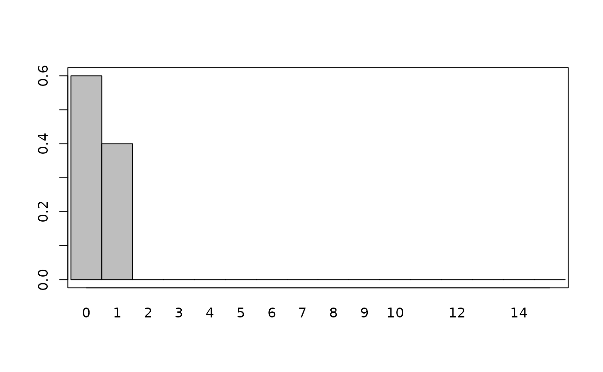
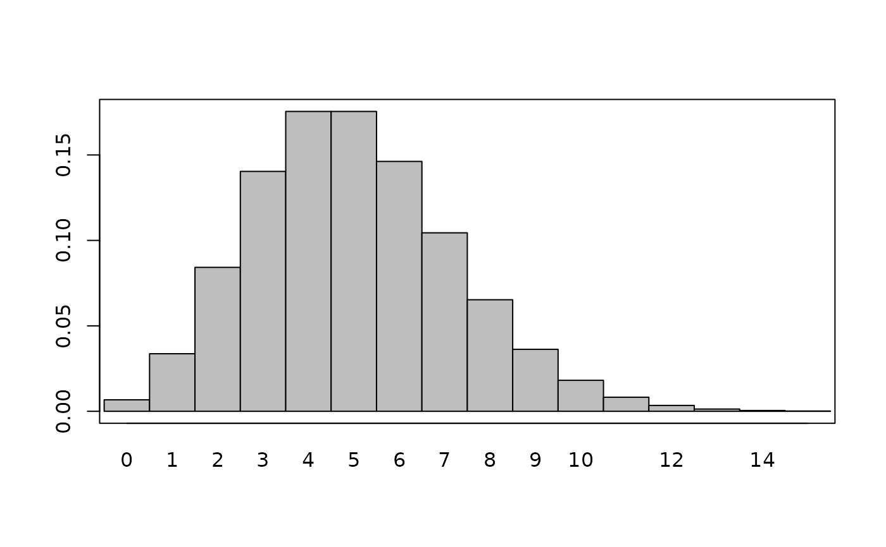
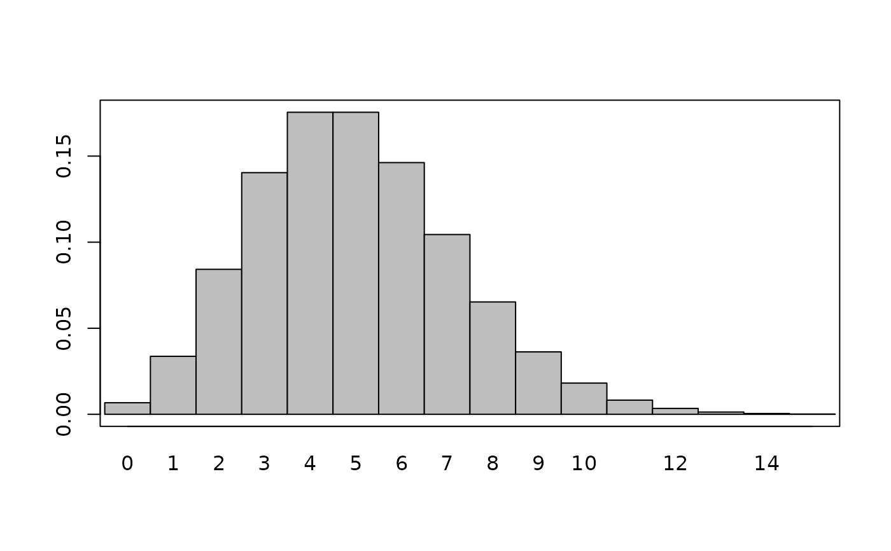

Plot Prior Objects
plot.RdPlot prior distributions as densities. Continuous distributions are plotted as curves and discrete distributions as bar plots.
Usage
# S4 method for Prior,missing
plot(
x,
y,
default_limits,
dist_type = c("continuous", "discrete"),
density_fun,
add,
...
)
# S4 method for NormalPrior,missing
plot(x, y, add = FALSE, ...)
# S4 method for BernoulliPrior,missing
plot(x, y, add = FALSE, ...)
# S4 method for BetaPrior,missing
plot(x, y, add = FALSE, ...)
# S4 method for CauchyPrior,missing
plot(x, y, add = FALSE, ...)
# S4 method for ExponentialPrior,missing
plot(x, y, add = FALSE, ...)
# S4 method for GammaPrior,missing
plot(x, y, add = FALSE, ...)
# S4 method for PoissonPrior,missing
plot(x, y, add = FALSE, ...)
# S4 method for UniformPrior,missing
plot(x, y, add = FALSE, ...)Arguments
- x
Object inheriting from
Prior- y
Not used.
- default_limits
Numeric range to plot distribution over.
- dist_type
Plot a continuous or discrete distribution.
- density_fun
Function which takes a vector of values and returns a vector of density values.
- add
logical. Add density to existing plot.
- ...
Optional arguments for plotting.
Details
Plot ranges are selected by default to show 99% of the density for unbounded distributions.
The limits can be changed by specifying xlim = c(lower, upper).
Colors, line types, and other typical par() parameters can be used.
Examples
plot(normal_prior(1, 2))
plot(bernoulli_prior(0.4), xlim = c(0, 15))

plot(beta_prior(2, 2))
plot(cauchy_prior(0, 1), xlim = c(-20, 20))
plot(cauchy_prior(0, 2), xlim = c(-20, 20), col = 2, add = TRUE)
 plot(exponential_prior(0.1))
plot(gamma_prior(0.1, 0.1))
plot(poisson_prior(5), xlim = c(0, 15))

plot(uniform_prior(1, 2), xlim = c(0, 3))
plot(exponential_prior(0.1))
plot(gamma_prior(0.1, 0.1))
plot(poisson_prior(5), xlim = c(0, 15))

plot(uniform_prior(1, 2), xlim = c(0, 3))